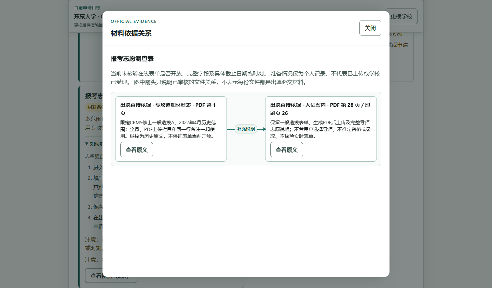

东京科学大学
信息工学系 · 2027 年 4 月入学 · B 日程
先了解日期、材料和考试安排，再对照准备情况。
此演示仅覆盖上述申请目标，不代表产品全部可选范围。
无需登录或安装
了解需要准备的材料，对照自己的进度。
遇到复杂条件，随时回到官方资料核对。
从留学教务的实际需求出发，搭建可检索、可核对的资料系统。通过保存的样例，体验已经实现的两校四步流程。
支持日语、中文切换，沿用实际产品界面。

“为什么需要？”可以结合多份资料核对。图中的关系经过审核，并非自动推测。
THE EXPERIENCE
不只看截图，还可以亲自操作完整流程。
确认学校、专攻和资料适用范围。
了解时间、提交材料和考试安排。
切换预设的个人准备情况。
查看待办，生成并复制参考报告。
TWO SCHOOLS · FIVE SCENARIOS
信息工学系 · 2027 年 4 月入学 · B 日程
先了解日期、材料和考试安排，再对照准备情况。
此演示仅覆盖上述申请目标，不代表产品全部可选范围。
新领域创成科学研究科 · 复杂理工学专攻
五个材料主题，以及共通要项、专攻指南和追加提交物之间的关系。
采用 2027 年度修士、一般选拔 A 日程、4 月入学的固定资料；不构成完整材料清单或出愿资格判断。
结合关键词检索与 BGE-M3 语义检索。
将条件核对与自然语言参考回答分开，保留文件、页码和适用范围。
演示沿用已有界面和验证结果，没有重新构建模型或索引。